Contributor Guide
Welcome to the Smart AutoSorter AI Pro project! This guide will help you get started with testing and contributing.
Development Setup
To set up your local development environment and sync dependencies, run the standard uv commands:

uv sync
uv run pre-commit install
Once the setup is complete, verify your environment by running the test suite:
uv run pytest
Interactive CLI Demo Mode
To help new developers quickly understand the end-to-end data flow without reviewing source code, the system includes an interactive demo mode.
Running the Demo
The demo automatically generates a sample corpus of documents that meet the pipeline requirements (minimum of 3 documents). It then simulates the background extraction and clustering logic, ultimately printing the resulting sorting plan.
To run the interactive demo, use the following command:
uv run smart-autosorter --demo
Automated Sample Corpus Utility
The demo mode leverages an internal automated utility (generate_sample_corpus in app/demo.py) that quickly builds a test dataset containing at least 3 documents. This satisfies the minimum document constraint required by the ML clustering engine. Developers can review this script to see how sample data (e.g., mock text files on finance and technology) is assembled for local testing.
Centralized Backend System Utilities
To prevent redundant patterns, platform-specific bugs, and visual/functional defects across application scopes, we consolidate all system packaging, path character validation, and session database directory setup / encryption key lookups.
1. Unified Helpers Overview
All shared system utilities must reside in or be exposed through app.core.path_utils. Direct usage of custom platform/frozen hacks is strictly prohibited.
is_packaged() -> bool: ReturnsTrueif running inside a frozen bundle (e.g., PyInstaller).get_base_path(caller_file_path: str = None) -> str: Standard application base path resolver. Always pass__file__when calling from another module so that mocked environments are correctly handled.validate_target_path(target_path: str, keyword: str = None) -> None: Standard target path validation for illegal characters, absolute paths, or traversal segments.is_subpath_or_equal(child: str, parent: str) -> bool: Cross-platform boundary containment check verifying whether a candidate path is within a parent directory.setup_session_directory(session_id: str = None) -> tuple[str, Path]: Sets up the standard data/session directory in the OS temp folder.resolve_db_crypto(db_path: Path | str) -> SessionCrypto: Standard lookup function for session encryption keys and database decrypters.CryptoManager: Centralized facade (app.core.crypto) providing static methods for key derivation (derive_db_hash,derive_keyring_account,derive_isolated_key_path), envelope encryption (encrypt_proxy_setting,decrypt_proxy_setting), and pre-flight key generation (generate_bootstrap_key).sanitize_secret_patterns(text: str, replacement: str = "") -> str: Centralized secret scrubbing delegate (app.core.text_utils) that redacts API keys, JWTs, Bearer tokens, private keys, and high-entropy secret payloads across text streams and logging filters.
2. Architectural Decisions & Rules
- No Direct
sys.frozenChecks: Never usegetattr(sys, "frozen", False)in modules. Useis_packaged()instead. - Consolidated Illegal Characters: All paths and filenames must validate against
ILLEGAL_PATH_CHARS_SETorILLEGAL_NAME_CHARS_SETinsideapp/core/path_utils.py. - Standard Key Resolution: Any database connection or database initialization must obtain its
SessionCryptoinstance viaresolve_db_crypto(db_path). Do not hardcode standardsecret.keyfilenames or paths inside database modules. - Centralized Cryptography & Secret Scrubbing: Use
CryptoManagerstatic methods for key derivation and proxy envelope encryption. Route diagnostic and log scrubbing throughsanitize_secret_patterns().